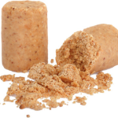
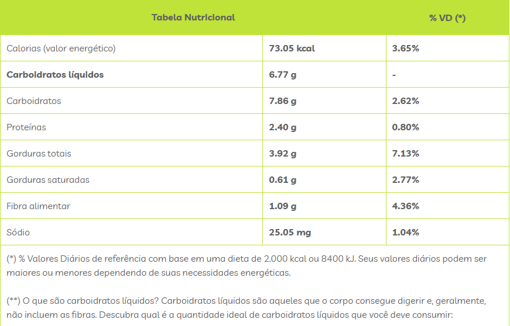

Paçoca
A paçoca é um doce tradicional feito à base de amendoim, açúcar e sal, com algumas variações que podem incluir ingredientes como farinha de mandioca. É uma fonte rica em energia, gorduras saudáveis, proteínas e fibras, que auxiliam no controle da saciedade e na saúde cardiovascular. Quanto às composições alergênicas, a paçoca tradicional não contém glúten, mas pode conter lactose ou traços de leite em algumas versões industrializadas, além de ser um alimento de risco para alérgicos ao amendoim, que é seu principal ingrediente. A seguir, uma tabela nutricional estimada da Paçoca por 15g (1 unidade):

